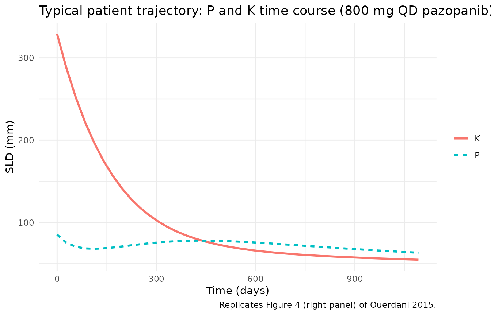
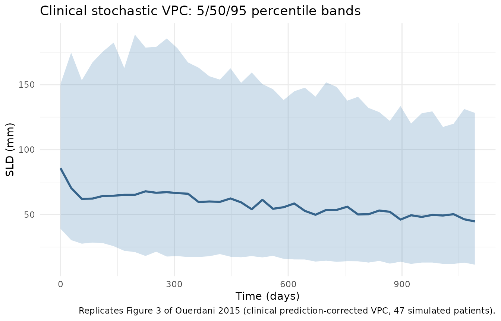
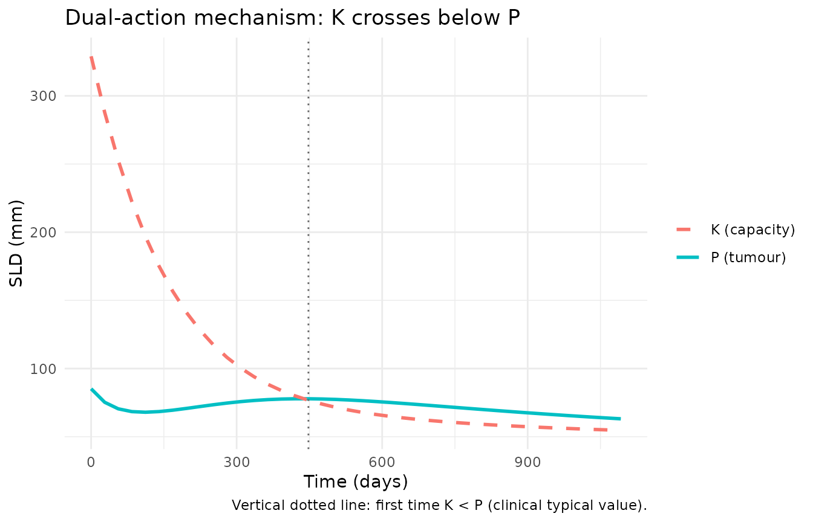

Pazopanib clinical TGI (Ouerdani 2015)
Source:vignettes/articles/Ouerdani_2015_pazopanib.Rmd
Ouerdani_2015_pazopanib.RmdModel and source
- Citation: Ouerdani A, Struemper H, Suttle AB, Ouellet D, Ribba B. Preclinical modeling of tumor growth and angiogenesis inhibition to describe pazopanib clinical effects in renal cell carcinoma. CPT Pharmacometrics Syst Pharmacol. 2015;4(11):660-668. doi:[10.1002/psp4.12001](https://doi.org/10.1002/psp4.12001).
- The on-disk PDF is the corrected version of the article (revised online 2015-11-12); the paper’s first-page footnote states that Table 1 was replaced after the initial publication. All parameter values used here come from the corrected Table 1.
This vignette validates the clinical fit of the semi-mechanistic
tumour-growth and angiogenesis-inhibition (TGI) model in renal-cell
carcinoma patients. The paired preclinical (CAKI-2 xenograft mouse) fit
lives in Ouerdani_2015_pazopanib_mouse and is covered by a
separate vignette. The clinical fit differs from the preclinical fit in
two model-structure ways: (a) the empirical capacity-growth exponent
n is fixed at 0.5 (vs 1 in the
mouse fit), and (b) both AUC exponents on the drug-effect rates
(b_a cytotoxic and b_c antiangiogenic) are
estimated (vs b_a fixed to 0 in the mouse fit).
Population
47 adult patients with advanced and/or metastatic renal-cell carcinoma of predominantly clear-cell histology, ages 43-79 years, with measurable disease by RECIST. All were either treatment-naive or had received a single prior systemic immunotherapy with cytokines, and/or had prior surgery (nephrectomy) and/or radiotherapy; ECOG performance status 0 or 1; adequate haematologic, hepatic, and renal function. Patients received 800 mg pazopanib once daily, with dose reductions allowed in case of intolerance (mean dose 727 mg/day, range 473-800). Disease assessments by CT or MRI were scheduled at baseline, weeks 8 and 12, and every 8 weeks thereafter until RECIST 1.1 progression. The dataset comes from the multicenter open-label Phase 2 study NCT00244764 (Ouerdani 2015 reference 16).
The same information is available programmatically via
readModelDb("Ouerdani_2015_pazopanib")$population.
Source trace
Equations from Ouerdani 2015 Methods Equation 1 (clinical fit with
n = 0.5); parameter values from the corrected Table 1,
clinical column. Drug exposure (AUC_PAZO) is sourced from
an Emax fit to mean AUCs reported across five prior pazopanib trials at
daily doses ranging from 5 mg to 2000 mg (Ouerdani 2015 Methods,
clinical-data section).
| Equation / parameter | Value | Source location |
|---|---|---|
d/dt(tumorSize) |
n/a | Ouerdani 2015 Methods Equation 1 |
d/dt(carryingCapacity) |
n/a | Ouerdani 2015 Methods Equation 1 |
a = a0 * AUC_PAZO^b_a |
n/a | Ouerdani 2015 Methods Equation 2 |
c = c0 * AUC_PAZO^b_c |
n/a | Ouerdani 2015 Methods Equation 3 |
lk_tumor |
log(0.0021) |
Table 1 clinical k = 0.0021 (RSE 6%) |
lk_cap (b) |
log(0.0392) |
Table 1 clinical b = 0.0392 (RSE 22%); IIV fixed to 0 |
lk_aa0 (c0) |
log(0.0023) |
Table 1 clinical c = 0.0023 (RSE 9%) |
lk_cyto0 (a0) |
log(0.0032) |
Table 1 clinical a = 0.0032 (RSE 2%) |
lk_res (d) |
log(0.0153) |
Table 1 clinical d = 0.0153 (RSE 3%) |
lK0 |
log(329) |
Table 1 clinical K0 = 329 (RSE 25%); IIV fixed to 0 |
e_auc_pazo_k_aa (b_c) |
0.142 |
Table 1 clinical b_c = 0.142 (RSE 7%) |
e_auc_pazo_k_cyto (b_a) |
0.125 |
Table 1 clinical b_a = 0.125 (RSE 14%) |
n |
fixed(0.5) |
Results: clinical fit uses n = 0.5 (vs n = 1 in the paired mouse fit) |
etalk_tumor |
0.6724 (= 0.82^2) |
Table 1 clinical IIV on k = 82% (RSE 35%) |
etalk_aa0 |
0.0961 (= 0.31^2) |
Table 1 clinical IIV on c0 = 31% (RSE 51%) |
etalk_cyto0 |
0.3844 (= 0.62^2) |
Table 1 clinical IIV on a0 = 62% (RSE 29%) |
etalk_res |
1.0201 (= 1.01^2) |
Table 1 clinical IIV on d = 101% (RSE 45%) |
propSd |
0.08 |
Table 1 clinical e1 = 8% (RSE 2%) |
addSd |
1 |
Table 1 clinical e2 = 1 mm (RSE 3%) |
Mean AUC_PAZO (population) |
771.6 ug*h/mL |
Methods, clinical-data section; range 629.4-802.4 across 47 patients |
Virtual cohort
The source dataset is 47 patients, all on pazopanib (no placebo arm);
per-patient AUC is derived from an Emax fit to the patient’s own dose
history. The virtual cohort below uses 47 patients on 800 mg pazopanib
once daily with a single average exposure of 771.6 ug*h/mL throughout
follow-up (the paper’s reported population mean). Per-patient baseline
SLD (TUM_SLD) is drawn from a lognormal distribution
centred near the model’s typical K0 to span the tumour-burden range
commonly seen in advanced RCC.
set.seed(2015)
n_subjects <- 47L
followup_days <- 365 * 3L # 3 years of follow-up; assessment grid every 28 days
obs_times <- seq(0, followup_days, by = 28)
baseline_sld <- rlnorm(n_subjects, meanlog = log(85), sdlog = 0.45) # span ~30-200 mm
events_clin <- tibble(
id = seq_len(n_subjects),
TUM_SLD = baseline_sld,
AUC_PAZO = 771.6
) |>
tidyr::crossing(time = obs_times) |>
mutate(evid = 0L, amt = 0,
trial = "NCT00244764 (Phase 2 RCC; 800 mg QD pazopanib)")
stopifnot(!anyDuplicated(unique(events_clin[, c("id", "time", "evid")])))Typical-value simulation (Figure 4 right panel)
Ouerdani 2015 Figure 4 (right panel) shows the typical-value time
courses of P (SLD) and K (carrying capacity)
in patients. The simulation reproduces the published mechanistic
signature: (i) an initial short-term SLD decline driven by the cytotoxic
effect a * exp(-d*t); (ii) regrowth as the cytotoxic
resistance exp(-d*t) decays; (iii) a second, slower SLD
decline as K (driven down by the antiangiogenic effect
c) crosses below P. The paper’s Discussion
notes this “unusual pattern” was observed in about 13% of patients; the
typical-value simulation puts the second-decline inflection near month
~17, in line with the published narrative.
mod_clin <- readModelDb("Ouerdani_2015_pazopanib")
mod_clin_typ <- mod_clin |> rxode2::zeroRe()
#> ℹ parameter labels from comments will be replaced by 'label()'
# For a clean typical-value trajectory plot, fix TUM_SLD to the cohort median
# so all subjects start at the same baseline; this isolates the model's
# mechanistic shape from baseline variability.
events_typical <- tibble(
id = 1L,
TUM_SLD = median(baseline_sld),
AUC_PAZO = 771.6
) |>
tidyr::crossing(time = obs_times) |>
mutate(evid = 0L, amt = 0)
sim_clin_typ <- rxode2::rxSolve(
mod_clin_typ,
events = events_typical
) |>
as.data.frame()
#> ℹ omega/sigma items treated as zero: 'etalk_tumor', 'etalk_aa0', 'etalk_cyto0', 'etalk_res'
clin_long <- sim_clin_typ |>
select(time, P = tumorSize, K = carryingCapacity) |>
pivot_longer(c(P, K), names_to = "state", values_to = "value")
ggplot(clin_long, aes(time, value, colour = state, linetype = state)) +
geom_line(linewidth = 1) +
labs(x = "Time (days)", y = "SLD (mm)",
colour = NULL, linetype = NULL,
title = "Typical patient trajectory: P and K time course (800 mg QD pazopanib)",
caption = "Replicates Figure 4 (right panel) of Ouerdani 2015.") +
theme_minimal()
Stochastic VPC (Figure 3 of the paper)
Including IIV on k, c0, a0,
and d (per the paper’s clinical column) and the combined
additive + proportional residual error gives a stochastic VPC analogous
to Figure 3 of the paper (prediction-corrected VPC of the clinical SLD
trajectories).
sim_clin_iiv <- rxode2::rxSolve(
mod_clin,
events = events_clin,
keep = c("trial")
) |>
as.data.frame()
#> ℹ parameter labels from comments will be replaced by 'label()'
vpc_clin <- sim_clin_iiv |>
group_by(time) |>
summarise(
Q05 = quantile(sim, 0.05, na.rm = TRUE),
Q50 = quantile(sim, 0.50, na.rm = TRUE),
Q95 = quantile(sim, 0.95, na.rm = TRUE),
.groups = "drop"
)
ggplot(vpc_clin, aes(time, Q50)) +
geom_ribbon(aes(ymin = pmax(Q05, 0), ymax = Q95), alpha = 0.25, fill = "steelblue") +
geom_line(linewidth = 1, colour = "steelblue4") +
labs(x = "Time (days)", y = "SLD (mm)",
title = "Clinical stochastic VPC: 5/50/95 percentile bands",
caption = "Replicates Figure 3 of Ouerdani 2015 (clinical prediction-corrected VPC, 47 simulated patients).") +
theme_minimal()
Mechanistic sanity checks
1. Drug-free trajectory = pure logistic growth
Setting AUC_PAZO = 0 zeroes both drug-effect rates via
the model’s if (AUC_PAZO > 0) gate. A “drug-free”
simulation should therefore show monotonic SLD growth (Verhulst-Pearl
logistic plus capacity expansion).
events_off <- events_typical |>
mutate(AUC_PAZO = 0)
sim_off <- rxode2::rxSolve(mod_clin_typ, events = events_off) |>
as.data.frame()
#> ℹ omega/sigma items treated as zero: 'etalk_tumor', 'etalk_aa0', 'etalk_cyto0', 'etalk_res'
stopifnot(all(diff(sim_off$tumorSize) > 0))
knitr::kable(
sim_off |>
select(time, tumorSize, carryingCapacity) |>
filter(time %in% c(0, 168, 364, 728, followup_days)),
digits = 3,
caption = "Drug-free clinical trajectory (AUC_PAZO = 0; pure logistic growth)."
)| time | tumorSize | carryingCapacity |
|---|---|---|
| 0 | 85.174 | 329.000 |
| 168 | 110.225 | 393.890 |
| 364 | 147.451 | 480.758 |
| 728 | 245.373 | 678.427 |
2. Dual-action mechanism: P and K crossings
In the published Discussion the long-term SLD decline is attributed
to the antiangiogenic effect c driving K below
P after the initial cytotoxic-effect-driven decline has
been undone by the resistance term exp(-d*t). The
simulation should show K crossing below P at
some point after the initial cytotoxic transient.
crossing_time <- sim_clin_typ |>
filter(carryingCapacity < tumorSize) |>
summarise(first_cross = min(time)) |>
pull(first_cross)
cat(sprintf("Typical-value K-below-P crossover at t = %s days (~%.1f months)\n",
crossing_time, crossing_time / 30.4))
#> Typical-value K-below-P crossover at t = 448 days (~14.7 months)
ggplot(sim_clin_typ, aes(time)) +
geom_line(aes(y = tumorSize, colour = "P (tumour)"), linewidth = 1) +
geom_line(aes(y = carryingCapacity, colour = "K (capacity)"), linewidth = 1, linetype = "dashed") +
geom_vline(xintercept = crossing_time, linetype = "dotted", colour = "grey40") +
labs(x = "Time (days)", y = "SLD (mm)",
colour = NULL,
title = "Dual-action mechanism: K crosses below P",
caption = "Vertical dotted line: first time K < P (clinical typical value).") +
theme_minimal()
3. Dimensional analysis of the ODE
| Term | Units | Reduces to |
|---|---|---|
k_tumor * tumorSize |
1/day * mm |
mm / day |
(1 - tumorSize / carryingCapacity) |
unitless | unitless |
cyto_rate * exp(-k_res*t) * tumorSize |
1/day * unitless * mm |
mm / day |
k_cap * tumorSize^n |
(mm^0.5 / day) * mm^0.5 |
mm / day (clinical n = 0.5) |
aa_rate * carryingCapacity |
1/day * mm |
mm / day |
Both ODE right-hand sides reduce to mm / day, consistent
with d/dt(state) where state is in
mm (SLD scale) and t is in days. The clinical
fit’s n = 0.5 shifts the units burden onto
k_cap, whose effective unit becomes
mm^(0.5) / day; that absorbs the source paper’s
preclinical-to-clinical re-parameterisation.
Assumptions and deviations
-
checkModelConventions()deviations (intentional). Runningnlmixr2lib::checkModelConventions("Ouerdani_2015_pazopanib")flags four warnings (no errors): (1) thetumorSizecompartment is not on the canonical-compartment list; (2) thecarryingCapacitycompartment is not on the canonical-compartment list; (3) the single-output observation variable should beCc; (4)units$concentrationdoes not contain/(mass / volume). All four are intrinsic to a tumour-volume-dynamics model with no drug-concentration / dosing ODE. The same deviations apply to every other tumour-size-dynamics model in the package. SLD in mm is not a drug concentration;Ccis reserved for plasma drug concentrations and would be misleading here. The deviations are intentional. -
AUC_PAZO > 0gate. Same rationale as the paired mouse model: at AUC = 0 the power formsa = a0 * AUC^b_aandc = c0 * AUC^b_cwould either give0(if both exponents are positive) ora0/c0(under the NONMEM convention0^0 = 1). The gate forces both rates to exactly zero off-treatment, which matches the paper’s no-drug-effect intent for permanent-discontinuation intervals. The clinical-fit exponentsb_a = 0.125andb_c = 0.142are both strictly positive, so the gate only matters when the user simulates an off-treatment period (setAUC_PAZO = 0). -
Per-patient baseline SLD drawn from a lognormal.
The paper sets P0 per-patient from the observed baseline SLD but does
not report individual values. The virtual cohort here draws
TUM_SLDfrom a lognormal with median 85 mm andsdlog = 0.45, spanning approximately 30-200 mm to match the qualitative range of clinical RCC baseline SLDs. Users with patient-level SLD data should supplyTUM_SLDdirectly per subject. -
Per-patient AUC fixed at the population mean. The
paper estimates per-patient AUC from an Emax fit to the patient’s own
dose history. The virtual cohort uses the reported population mean of
771.6 ug*h/mLfor every subject; per-subject AUC variability around the mean (range 629.4-802.4) is not retained in this simulation. -
PKNCA validation is omitted. This is a
tumour-size-dynamics model with no drug-concentration / dosing ODE. The
vignette substitutes the mechanistic-sanity checks above (drug-free =
pure growth, K-below-P crossover, dimensional analysis), matching the
validation pattern used by the paired mouse model and by
Zecchin_2016_tumorovarian. - Erratum (Table 1 replacement) folded into the on-disk PDF. The paper’s first-page footnote states that an error in Table 1 was corrected, with the revised version published online on 2015-11-12. The on-disk PDF used for this extraction is the corrected version; all parameter values come from that corrected Table 1 (no separate erratum document to track).